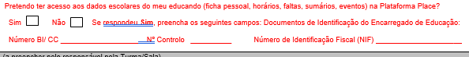
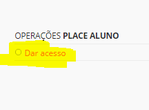
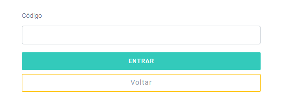

Acesso ao Place
Para as renovações 2018/2019, estamos a solicitar através do boletim de renovação, a todos os pais ou encarregados de educação que estejam interessados em ter acesso a Plataforma Place, que assinalem o seu interesse e registe os dados necessários para permitir o seu acesso.
Neste acesso, terão a possibilidade de consultar os dados escolares dos seus educandos, nomeadamente:
Ficha pessoal
Horários
Faltas
Eventos
E outras situações que demonstrem ser igualmente improtantes.

Aviso
Este acesso deverá sempre salvaguardar e proteger os dados de todos os alunos. Cada encarregado de educação deve salvaguardar os dados dos seus educandos.
Place Aluno
Para o ano letivo 2018/2019, a Plataforma Place disponibilizou aplicações para que o encarregado de educação tenha acesso às informações educativas dos seus educandos.
Para que o acesso seja feito corretamente, as escolas devem de validar o encarregado de educação.
- Ir ao aluno
- Separador encarregado de educação
Preencher os dados obrigatórios do encarregado de educação:

Dar acesso

Ao clicar neste item, vai gerar um código de acesso, o qual deve foenecer a cada ecarregado de educação que solicite.

Importante
Em caso de esquecimento da palavra-passe, pode clicar em nova palavra-passe. Caso a pessoa deixe de ser encarregado de educação, deve clicar em revogar acesso. A qualquer momento, caso seja necessário e devidamente justificado, pode criar um novo encarregado de educação.
Nota
Os encarregados de educação devem pedir o acesso e validade dos dados do encarregad de educação nas diferentes escolas onde tenham filhos a frequentar (caso tenham mais que um filho).
Quando o encarregado de educação tiver em sua posse o código de acesso deve aceder:
versão web ou através de aplicações móveis para Android e iOS, ou pesquisando pelo nome da aplicação na Play Store e App Store, respetivamente.
Caso seja o primeiro acesso deve:
1º passo: Criar conta

2º passo – Validar código

Deve inserir o código disponibilizado pela escola.
3º passo: – Definir nome do utilizador e palavra-passe
Neste campo, é importante escolher o utilizador e palavra-passe e que tenha a consciência que serão sempre necessários quando quiser aceder a aplicação.
Após a criação da conta (apenas uma vez) deve entrar utilizando o utilizador e palavra-passe definidas para entrar na aplicação.

Quando entra na aplicação consegue visalizar:
Os educandos e as escolas onde estão matriculados.
Se clicar num aluno irá aparecer:
- Ficha pessoal do aluno

- O Horário

- Eventos importantes do aluno
a) Faltas e testes marcados

Aten��o
Há apenas um encarregado de educação! Este deve, sempre, garantir a segurança e proteção dos dados pessoas da criança/aluno. Deve manter o acesso às aplicações do Place em segurança.